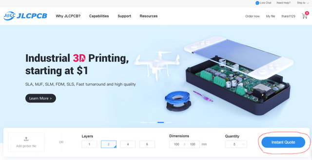
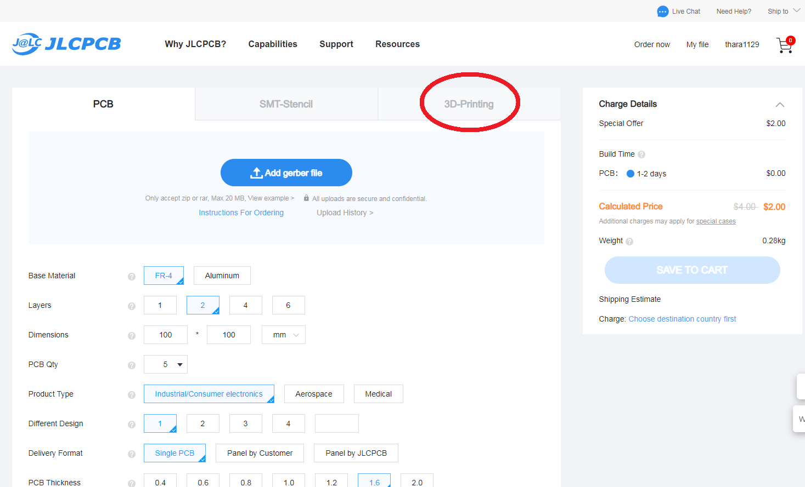

JLCPCB の 3Dプリントサービスを使って CASIO MX-101 スロットカバーを作る (2022年9月23日現在)
≪発注する≫
右下の Instant Quote というボタンをクリックして下さい。

[JLCPCB Instante Quote]
プリント基板の発注画面になりますが、3D Printing のボタンをクリックすると、3Dプリントメニューに切り替わります。

[JLCPCB 発注画面]
[前へ]
[次へ]